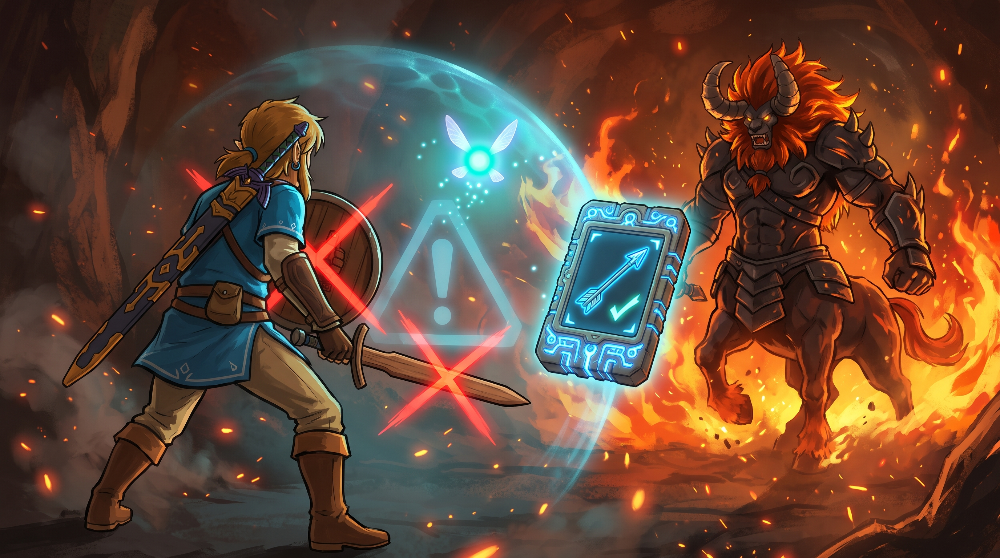
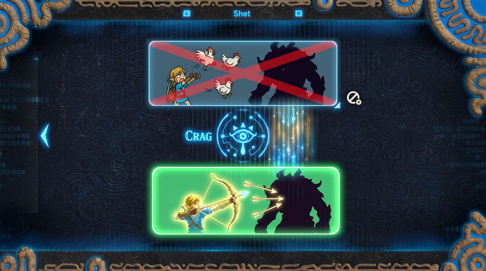

Fase 03 · KPI: Faithfulness
El escudo anti-alucinaciones
Incluso con Búsqueda Híbrida y Reranking, a veces la base de datos interna simplemente no tiene la respuesta correcta, o los documentos recuperados están obsoletos. En el RAG tradicional, el LLM intentaría responder de todos modos usando esos documentos inútiles, provocando una alucinación, una respuesta coherente pero completamente falsa.
CRAG añade un evaluador automático antes de generar la respuesta final. Este evaluador, generalmente un LLM especializado actuando como juez, analiza la relación entre la pregunta del usuario y los documentos recuperados, clasificando el contexto recuperado en tres estados posibles antes de decidir qué hacer a continuación.
Los documentos recuperados responden correctamente la pregunta del usuario. El contexto es relevante, actualizado y fiable.
Los documentos no sirven, están desactualizados o son completamente irrelevantes para la pregunta formulada.
El contexto tiene algo de información útil, pero no toda la necesaria. La respuesta sería incompleta con solo los documentos internos.
El evaluador de CRAG actúa como un guardián inteligente antes del LLM generador. Su trabajo no es producir la respuesta final, sino garantizar que quien la produzca (el LLM) tenga el mejor contexto posible. Puede conectarse a herramientas de búsqueda web como Tavily o SerpAPI cuando los documentos internos fallan.
Cuando los documentos son útiles (CORRECTO o AMBIGUO), CRAG también aplica un paso de refinamiento: elimina fragmentos irrelevantes dentro de los documentos, comprime el contexto y extrae solo las partes más pertinentes a la pregunta. Esto reduce el ruido antes de pasarlo al LLM generador.
Cuando CRAG determina que los documentos son INCORRECTOS o AMBIGUOS, activa una búsqueda web en tiempo real. Herramientas como Tavily AI Search o SerpAPI devuelven resultados actualizados de la web, que se usan como contexto alternativo o complementario para generar la respuesta final sin alucinaciones.

Link va a enfrentarse a un centaleón de fuego. Según sus "apuntes" (el contexto recuperado), saca una espada de madera y un escudo de madera para luchar. Justo antes de saltar a la batalla, el hada Navi (CRAG) analiza la situación y grita: "¡Hey, Listen! Tu equipo de madera se va a quemar al instante". Navi califica la estrategia de Link como "Incorrecta", le bloquea el uso de la madera y abre automáticamente la guía de monstruos para indicarle que debe usar equipo de hielo. Navi corrigió el error fatal antes de que ocurriera.
Mide si la respuesta final del LLM está estrictamente basada en el contexto proporcionado, sin inventar datos. Un Faithfulness de 1.0 significa que cada afirmación en la respuesta puede ser rastreada y verificada en los documentos de contexto. CRAG impacta directamente aquí al desechar documentos incorrectos antes de que el LLM los lea: si el LLM nunca ve contexto incorrecto, no puede alucinar a partir de él. Si el Faithfulness sube, significa que CRAG está actuando correctamente como filtro y el modelo ya no inventa respuestas.

El Rey de Hyrule le pregunta a la Tableta Sheikah cómo derrotar a Ganon. La tableta dice: "Lanzándole gallinas" (una alucinación). El Faithfulness mide qué tan apegada a la historia real es la respuesta. CRAG detecta que la táctica de las gallinas es mentira, borra ese dato, busca en la enciclopedia hyliana y responde correctamente: "Con las Flechas de Luz". Un Faithfulness de 1.0 = la Tableta Sheikah nunca miente.